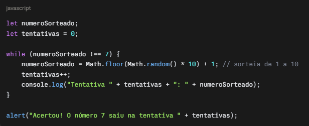
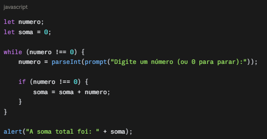
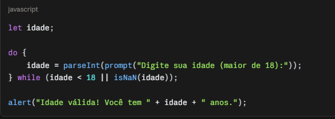
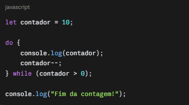
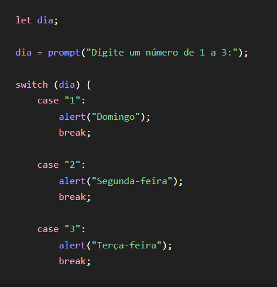

Uma estrutura de repetição é um recurso utilizado na programação para fazer com que um determinado conjunto de comandos seja executado várias vezes. Ela é importante porque permite repetir tarefas automaticamente, sem a necessidade de escrever o mesmo comando diversas vezes. As estruturas de repetição são utilizadas quando precisamos realizar uma ação várias vezes, como contar números, percorrer uma lista ou repetir uma tarefa enquanto determinada condição for verdadeira. Existem diferentes tipos de estruturas de repetição, como “enquanto” (while), “para” (for) e “faça... enquanto” (do while). Cada uma possui uma forma diferente de determinar quando a repetição deve começar e terminar. Por exemplo, a estrutura “enquanto” executa os comandos enquanto uma determinada condição for verdadeira. Quando essa condição se torna falsa, a repetição é encerrada. Dessa forma, as estruturas de repetição tornam os programas mais rápidos, organizados e eficientes, evitando a repetição desnecessária de códigos e facilitando a realização de tarefas que precisam ser executadas várias vezes.
A estrutura de repetição “enquanto”, também conhecida como while, é utilizada na programação quando queremos repetir um determinado conjunto de comandos enquanto uma condição for verdadeira. Seu funcionamento é simples: o programa verifica uma condição antes de executar os comandos. Se a condição for verdadeira, os comandos são executados e, em seguida, a condição é verificada novamente. Esse processo continua se repetindo até que a condição se torne falsa.

Este código em JavaScript demonstra o uso da estrutura de repetição while (enquanto) para resolver um problema comum: somar uma sequência de números informados pelo usuário, sem saber previamente quantos valores serão digitados. O programa fica perguntando números repetidamente através do prompt, acumulando cada valor em uma variável de soma, até que o usuário digite 0, sinalizando o fim da entrada de dados. Esse é um exemplo clássico de quando o while é mais indicado do que o for: quando a quantidade de repetições depende de uma condição definida durante a execução (a escolha do usuário), e não de um número fixo conhecido antecipadamente.

aqui
Digite um número inteiro e o programa ira somar os números pares.
A estrutura faça enquanto é parecida com o enquanto (while), mas com uma diferença importante: ela executa o bloco de código pelo menos uma vez, antes mesmo de verificar a condição. Só depois de rodar o bloco é que o programa checa se deve repetir ou não. Isso é útil quando você precisa garantir que uma ação aconteça no mínimo uma vez — por exemplo, pedir uma senha ao usuário: você precisa perguntar pelo menos uma vez, e só depois verificar se ela está correta para decidir se pergunta de novo.
contador começa em 10.O bloco do executa primeiro (mostra o valor e diminui 1), e só depois verifica se contador > 0. Isso se repete até contador chegar a 0, quando a condição se torna falsa e o loop para. Repare que a lógica é igual à do while, mas aqui a execução acontece antes da verificação.

paragrafo

aqui
aqui
paragrafo
paragrafo do exemplo 01

paragrafo do exemplo 02
aqui
aqui